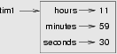

22. Even more OOP¶
22.1. MyTime¶
As another example of a user-defined type, we’ll define a class called MyTime
that records the time of day. We’ll provide an __init__ method to ensure
that every instance is created with appropriate attributes and initialization.
The class definition looks like this:
We can instantiate a new MyTime object:
The state diagram for the object looks like this:

We’ll leave it as an exercise for the readers to add a __str__
method so that MyTime objects can print themselves decently.
22.2. Pure functions¶
In the next few sections, we’ll write two versions of a function called
add_time, which calculates the sum of two MyTime objects. They will demonstrate
two kinds of functions: pure functions and modifiers.
The following is a rough version of add_time:
The function creates a new MyTime object and
returns a reference to the new object. This is called a pure function
because it does not modify any of the objects passed to it as parameters and it
has no side effects, such as updating global variables,
displaying a value, or getting user input.
Here is an example of how to use this function. We’ll create two MyTime
objects: current_time, which contains the current time; and bread_time,
which contains the amount of time it takes for a breadmaker to make bread. Then
we’ll use add_time to figure out when the bread will be done.
>>> current_time = MyTime(9, 14, 30) >>> bread_time = MyTime(3, 35, 0) >>> done_time = add_time(current_time, bread_time) >>> print(done_time) 12:49:30
The output of this program is 12:49:30, which is correct. On the other
hand, there are cases where the result is not correct. Can you think of one?
The problem is that this function does not deal with cases where the number of seconds or minutes adds up to more than sixty. When that happens, we have to carry the extra seconds into the minutes column or the extra minutes into the hours column.
Here’s a better version of the function:
This function is starting to get bigger, and still doesn’t work for all possible cases. Later we will suggest an alternative approach that yields better code.
22.3. Modifiers¶
There are times when it is useful for a function to modify one or more of the objects it gets as parameters. Usually, the caller keeps a reference to the objects it passes, so any changes the function makes are visible to the caller. Functions that work this way are called modifiers.
increment, which adds a given number of seconds to a MyTime object, would
be written most naturally as a modifier. A rough draft of the function looks like this:
The first line performs the basic operation; the remainder deals with the special cases we saw before.
Is this function correct? What happens if the parameter seconds is much
greater than sixty? In that case, it is not enough to carry once; we have to
keep doing it until seconds is less than sixty. One solution is to replace
the if statements with while statements:
This function is now correct when seconds is not negative, and when hours does not exceed 23, but it is not a particularly good solution.
22.4. Converting increment to a method¶
Once again, OOP programmers would prefer to put functions that work with
MyTime objects into the MyTime class, so let’s convert increment
to a method. To save space, we will leave out previously defined methods,
but you should keep them in your version:
The transformation is purely mechanical — we move the definition into
the class definition and (optionally) change the name of the first parameter to
self, to fit with Python style conventions.
Now we can invoke increment using the syntax for invoking a method.
Again, the object on which the method is invoked gets assigned to the first
parameter, self. The second parameter, seconds gets the value 500.
22.5. An “Aha!” insight¶
Often a high-level insight into the problem can make the programming much easier.
In this case, the insight is that a MyTime object is really a
three-digit number in base 60! The second
component is the ones column, the minute component is the sixties column,
and the hour component is the thirty-six hundreds column.
When we wrote add_time and increment, we were effectively doing
addition in base 60, which is why we had to carry from one column to the next.
This observation suggests another approach to the whole problem — we can
convert a MyTime object into a single number and take advantage of the fact
that the computer knows how to do arithmetic with numbers. The following
method is added to the MyTime class to convert any instance into
a corresponding number of seconds:
Now, all we need is a way to convert from an integer back to a MyTime object.
Supposing we have tsecs seconds, some integer division and mod operators
can do this for us:
You might have to think a bit to convince yourself that this technique to convert from one base to another is correct.
In OOP we’re really trying to wrap together the data and the operations
that apply to it. So we’d like to have this logic inside the MyTime
class. A good solution is to rewrite the class initializer so that it can
cope with initial values of seconds or minutes that are outside the
normalized values. (A normalized time would be something
like 3 hours 12 minutes and 20 seconds. The same time, but unnormalized
could be 2 hours 70 minutes and 140 seconds.)
Let’s rewrite a more powerful initializer for MyTime:
Now we can rewrite add_time like this:
This version is much shorter than the original, and it is much easier to demonstrate or reason that it is correct.
22.6. Generalization¶
In some ways, converting from base 60 to base 10 and back is harder than just dealing with times. Base conversion is more abstract; our intuition for dealing with times is better.
But if we have the insight to treat times as base 60 numbers and make the investment of writing the conversions, we get a program that is shorter, easier to read and debug, and more reliable.
It is also easier to add features later. For example, imagine subtracting two
MyTime objects to find the duration between them. The naive approach would be to
implement subtraction with borrowing. Using the conversion functions would be
easier and more likely to be correct.
Ironically, sometimes making a problem harder (or more general) makes the programming easier, because there are fewer special cases and fewer opportunities for error.
Specialization versus Generalization
Computer Scientists are generally fond of specializing their types, while mathematicians often take the opposite approach, and generalize everything.
What do we mean by this?
If we ask a mathematician to solve a problem involving weekdays, days of the century, playing cards, time, or dominoes, their most likely response is to observe that all these objects can be represented by integers. Playing cards, for example, can be numbered from 0 to 51. Days within the century can be numbered. Mathematicians will say “These things are enumerable — the elements can be uniquely numbered (and we can reverse this numbering to get back to the original concept). So let’s number them, and confine our thinking to integers. Luckily, we have powerful techniques and a good understanding of integers, and so our abstractions — the way we tackle and simplify these problems — is to try to reduce them to problems about integers.”
Computer Scientists tend to do the opposite. We will argue that there are many integer
operations that are simply not meaningful for dominoes, or for days of the century. So
we’ll often define new specialized types, like MyTime, because we can restrict,
control, and specialize the operations that are possible. Object-oriented programming
is particularly popular because it gives us a good way to bundle methods and specialized data
into a new type.
Both approaches are powerful problem-solving techniques. Often it may help to try to think about the problem from both points of view — “What would happen if I tried to reduce everything to very few primitive types?”, versus “What would happen if this thing had its own specialized type?”
22.7. Another example¶
The after function should compare two times, and tell us whether the first
time is strictly after the second, e.g.
>>> t1 = MyTime(10, 55, 12) >>> t2 = MyTime(10, 48, 22) >>> after(t1, t2) # Is t1 after t2? True
This is slightly more complicated because it operates on two MyTime
objects, not just one. But we’d prefer to write it as a method anyway —
in this case, a method on the first argument:
We invoke this method on one object and pass the other as an argument:
We can almost read the invocation like English: If the current time is after the done time, then…
The logic of the if statements deserve special attention here. Lines 11-18
will only be reached if the two hour fields are the same. Similarly, the test at
line 16 is only executed if both times have the same hours and the same minutes.
Could we make this easier by using our “Aha!” insight and extra work from earlier, and reducing both times to integers? Yes, with spectacular results!
This is a great way to code this: if we want to tell if the first time is after the second time, turn them both into integers and compare the integers.
22.8. Operator overloading¶
Some languages, including Python, make it possible to have different meanings for
the same operator when applied to different types. For example, + in Python
means quite different things for integers and for strings. This feature is called
operator overloading.
It is especially useful when programmers can also overload the operators for their own user-defined types.
For example, to override the addition operator +, we can provide a method named
__add__:
As usual, the first parameter is the object on which the method is invoked. The
second parameter is conveniently named other to distinguish it from
self. To add two MyTime objects, we create and return a new MyTime object
that contains their sum.
Now, when we apply the + operator to MyTime objects, Python invokes
the __add__ method that we have written:
>>> t1 = MyTime(1, 15, 42) >>> t2 = MyTime(3, 50, 30) >>> t3 = t1 + t2 >>> print(t3) 05:06:12
The expression t1 + t2 is equivalent to t1.__add__(t2), but obviously
more elegant. As an exercise, add a method __sub__(self, other) that
overloads the subtraction operator, and try it out.
For the next couple of exercises we’ll go back to the Point class defined
in our first chapter about objects, and overload some of its operators. Firstly, adding
two points adds their respective (x, y) coordinates:
There are several ways to
override the behavior of the multiplication operator: by defining a method
named __mul__, or __rmul__, or both.
If the left operand of * is a Point, Python invokes __mul__, which
assumes that the other operand is also a Point. It computes the
dot product of the two Points, defined according to the rules of linear
algebra:
If the left operand of * is a primitive type and the right operand is a
Point, Python invokes __rmul__, which performs
scalar multiplication:
The result is a new Point whose coordinates are a multiple of the original
coordinates. If other is a type that cannot be multiplied by a
floating-point number, then __rmul__ will yield an error.
This example demonstrates both kinds of multiplication:
>>> p1 = Point(3, 4) >>> p2 = Point(5, 7) >>> print(p1 * p2) 43 >>> print(2 * p2) (10, 14)
What happens if we try to evaluate p2 * 2? Since the first parameter is a
Point, Python invokes __mul__ with 2 as the second argument. Inside
__mul__, the program tries to access the x coordinate of other,
which fails because an integer has no attributes:
>>> print(p2 * 2) AttributeError: 'int' object has no attribute 'x'
Unfortunately, the error message is a bit opaque. This example demonstrates some of the difficulties of object-oriented programming. Sometimes it is hard enough just to figure out what code is running.
22.9. Polymorphism¶
Most of the methods we have written only work for a specific type. When we create a new object, we write methods that operate on that type.
But there are certain operations that we will want to apply to many types, such as the arithmetic operations in the previous sections. If many types support the same set of operations, we can write functions that work on any of those types.
For example, the multadd operation (which is common in linear algebra)
takes three parameters; it multiplies the first two and then adds the third. We
can write it in Python like this:
This function will work for any values of x and y that can be multiplied
and for any value of z that can be added to the product.
We can invoke it with numeric values:
>>> multadd (3, 2, 1) 7
Or with Points:
>>> p1 = Point(3, 4) >>> p2 = Point(5, 7) >>> print(multadd (2, p1, p2)) (11, 15) >>> print(multadd (p1, p2, 1)) 44
In the first case, the Point is multiplied by a scalar and then added to
another Point. In the second case, the dot product yields a numeric value,
so the third parameter also has to be a numeric value.
A function like this that can take arguments with different types is called polymorphic.
As another example, consider the function front_and_back, which prints a list
twice, forward and backward:
Because the reverse method is a modifier, we make a copy of the list before
reversing it. That way, this function doesn’t modify the list it gets as a
parameter.
Here’s an example that applies front_and_back to a list:
>>> my_list = [1, 2, 3, 4] >>> front_and_back(my_list) [1, 2, 3, 4][4, 3, 2, 1]
Of course, we intended to apply this function to lists, so it is not surprising
that it works. What would be surprising is if we could apply it to a Point.
To determine whether a function can be applied to a new type, we apply Python’s
fundamental rule of polymorphism, called the duck typing rule: If all of
the operations inside the function
can be applied to the type, the function can be applied to the type. The
operations in the front_and_back function include copy, reverse, and print.
Not all programming languages define polymorphism in this way. Look up duck typing, and see if you can figure out why it has this name.
copy works on any object, and we have already written a __str__ method
for Point objects, so all we need is a reverse method in the Point class:
Then we can pass Points to front_and_back:
>>> p = Point(3, 4) >>> front_and_back(p) (3, 4)(4, 3)
The most interesting polymorphism is the unintentional kind, where we discover that a function we have already written can be applied to a type for which we never planned.
22.10. Glossary¶
- dot product
- An operation defined in linear algebra that multiplies two
Points and yields a numeric value. - functional programming style
- A style of program design in which the majority of functions are pure.
- modifier
- A function or method that changes one or more of the objects it receives as parameters. Most modifier functions are void (do not return a value).
- normalized
- Data is said to be normalized if it fits into some reduced range or set of rules. We usually normalize our angles to values in the range [0..360). We normalize minutes and seconds to be values in the range [0..60). And we’d be surprised if the local store advertised its cold drinks at “One dollar, two hundred and fifty cents”.
- operator overloading
- Extending built-in operators (
+,-,*,>,<, etc.) so that they do different things for different types of arguments. We’ve seen early in the book how+is overloaded for numbers and strings, and here we’ve shown how to further overload it for user-defined types. - polymorphic
- A function that can operate on more than one type. Notice the subtle distinction: overloading has different functions (all with the same name) for different types, whereas a polymorphic function is a single function that can work for a range of types.
- pure function
- A function that does not modify any of the objects it receives as parameters. Most pure functions are fruitful rather than void.
- scalar multiplication
- An operation defined in linear algebra that multiplies each of the
coordinates of a
Pointby a numeric value.
22.11. Exercises¶
Write a Boolean function
betweenthat takes twoMyTimeobjects,t1andt2, as arguments, and returnsTrueif the invoking object falls between the two times. Assumet1 <= t2, and make the test closed at the lower bound and open at the upper bound, i.e. return True ift1 <= obj < t2.Turn the above function into a method in the
MyTimeclass.Overload the necessary operator(s) so that instead of having to write
if t1.after(t2): ...
we can use the more convenient
if t1 > t2: ...
Rewrite
incrementas a method that uses our “Aha” insight.Create some test cases for the
incrementmethod. Consider specifically the case where the number of seconds to add to the time is negative. Fix upincrementso that it handles this case if it does not do so already. (You may assume that you will never subtract more seconds than are in the time object.)Can physical time be negative, or must time always move in the forward direction? Some serious physicists think this is not such a dumb question. See what you can find on the Internet about this.